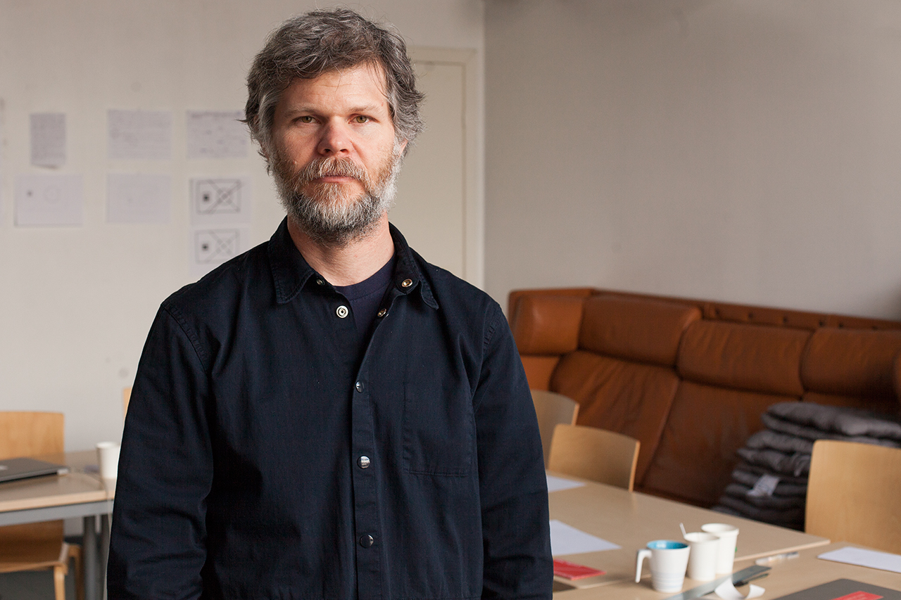

Casey Reas
1972Casey Edwin Barker Reas (nacido en 1972), también conocido como C. E. B. Reas o Casey Reas, es un artista estadounidense cuyas obras de arte conceptuales, procesales y mínimas exploran ideas a través de la lente contemporánea del software. Reas es quizás mejor conocido por haber creado, con Ben Fry, el lenguaje de programación Processing.

Vera Molnar
1924Vera Molnar nació el 5 de enero de 1924 en Budapest, Hungría. A los 18 años inicia sus estudios de Pintura e Historia del Arte y Estética en la escuela superior de Arte de Budapest. A los 23 años se traslada a Francia donde, hasta el presente ha ejercido su carrera artística.